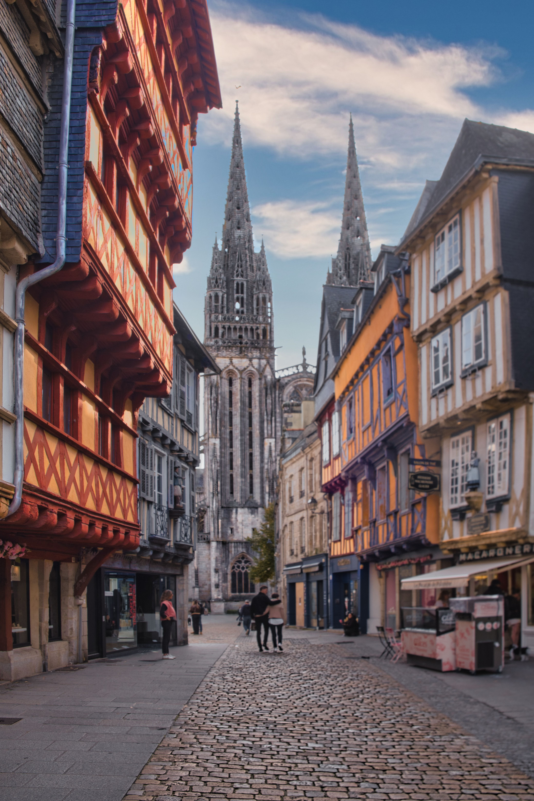

Rencontre des jeunes chercheureuses en analyse microlocale et géométrie
2–4 novembre 2026, Quimper, France
Organisé par Yann Chaubet et Malo Jézéquel

Participantes et participants
- Louis Beaufort
- Lino Benedetto
- Jules Blasco
- Sébastien Campagne
- Léo Cauchard
- Ambre Chabert
- Edmond Covanov
- Marianne Curely
- Baptiste Dugué
- Vincent Ferrarri-Dominguez
- Nicolas Frantz
- Tristan Humbert
- Julien Lechaux
- Victor Le Guilloux
- Aubin Modena
- Alessandro Morescalchi
- Julien Moy
- Julien Namazi
- Lucas Noel
- Nathan Réguer
- Tristan Samama
- Léo Thiebaud
- Eric Vacelet
- Arthur Yax
- Yuhui Zhu